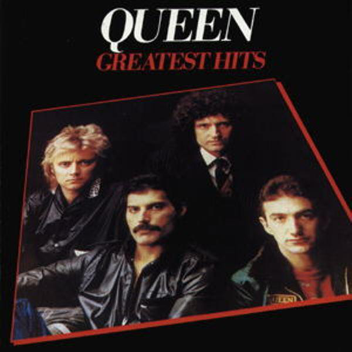
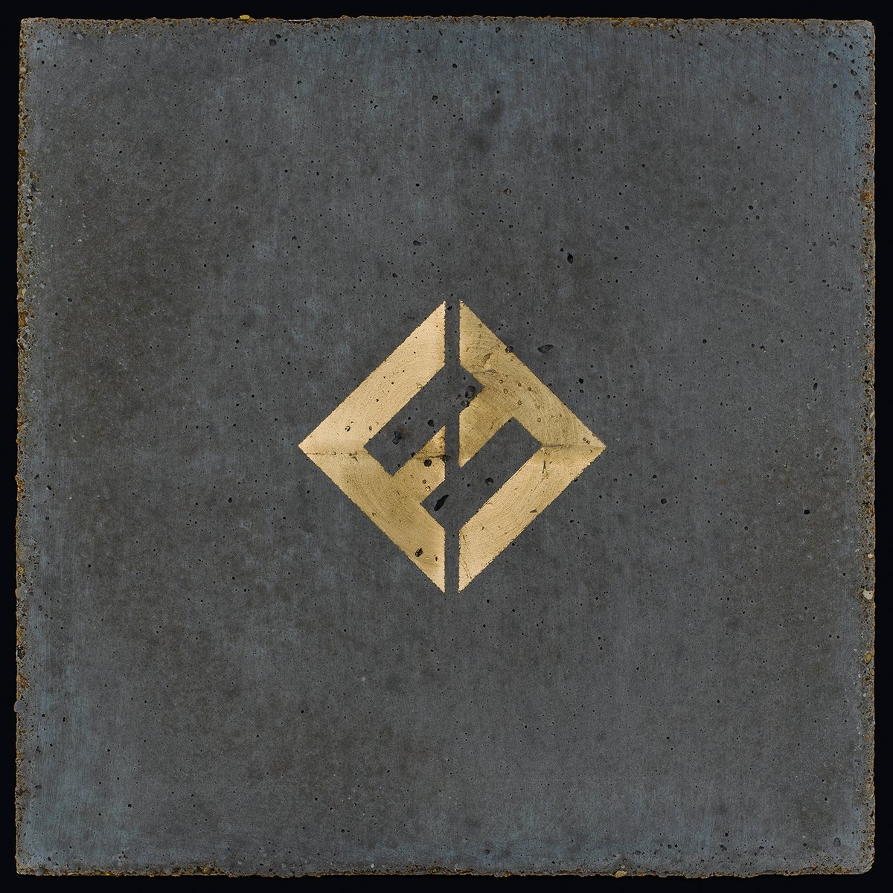

- Do I Wanna Know
- R U Mine?
- One for the Road
- Arabella
- I Want It All
- No.1 Party Anthem
- Mad Sounds
- Fireside
- Why'd You Only Call Me When You're High?
- Snap Out of it
- Knee Socks
- I Wanna Be Yours
Mytunes


- Bohemian Rhapsody
- Another One Bites The Dust
- Killer Queen
- Fat Bottomed Girls
- Bicycle Race
- You're My Best Friend
- Don't Stop Me Now
- Save Me
- Crazy Little Thing Called Love
- Somebody to Love
- Now i'm Here
- Good Old Fashioned Lover Boy
- Play the Game
- Flash
- Seven Seas of Rhye
- We Will Rock You
- We Are the Champions

- T-Shirt
- Run
- Make It Right
- The Sky Is a Neighborhood
- La Dee Da
- Dirty Water
- Arrows
- Happy Ever After (Zero Hour)
- Sunday Rain
- The Line
- Concrete and Gold